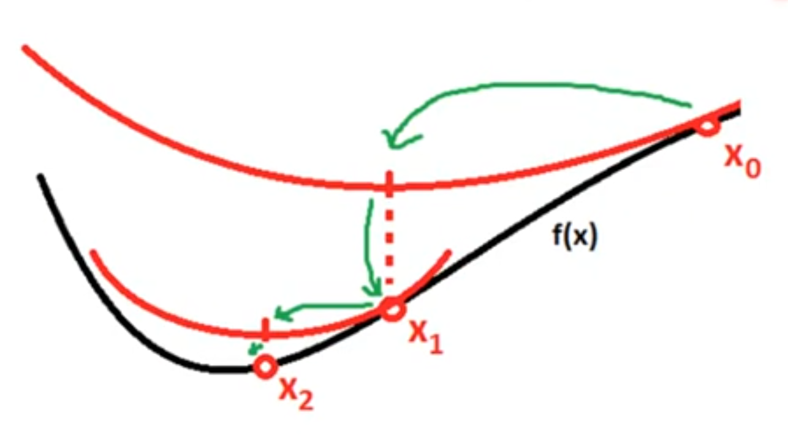
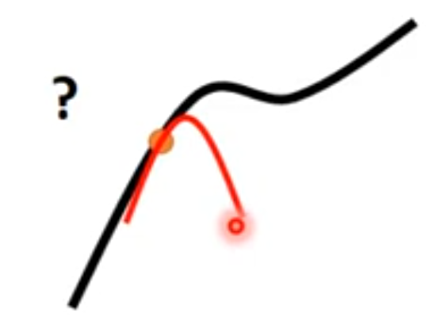

牛顿法基于泰勒公式和Hessian矩阵的应用。
1. 牛顿法的推导
将损失函数f(x)在x0处用泰勒公式展开，并保留到二阶项，得：
f(x)=f(x0)+(x−x0)g+21(x−x0)⊤H(x−x0)+...
牛顿法的思想是“直接找到令g=0”的位置。
方法是对f(x)在x0处的偏导并令所有偏导为0。
f′(x)==∇xf(x0)0++∇x(x−x0)gg++∇x21(x−x0)⊤H(x−x0)H(x−x0)
令f'(x)=0得：
x=−H−1g+x0
2. 牛顿法 VS 梯度下降法
牛顿法：x=−H−1g+x0
梯度下降法：x=−ηg+x0
牛顿法相对于梯度下降法的改进，是将学习率变成了Hessian矩阵的逆。
H−1的作用：
- 改变梯度的方向
- 决定了step的size
3. 举个例子

假设loss function为图中的黑线。
取x0的位置，按泰勒公式展开，保留前三项，得到红色曲线。
红色曲线是二次曲线，可直接计算出来它的最小值处为x1。
令x1为新的x0，开始下一轮迭代。
如果f(x)本身就是二次曲线，牛顿法可以一步到位。
4. 牛顿法近似
在H是正定的情况下，就能正常迭代。
当H不是正定时，牛顿法会出错。
解决方法：正则化，即H=H+aI
当H的负特征非常大时，a必须也很大，此时H被aI主导。
5. 牛顿法的缺点
- H−1的计算量大
- 这种方法只能保证找到f'(x)=0的点。但这种点不一定是minima。也有可能是maxima或者saddle point。

因此，牛顿法不适用于深度学习。